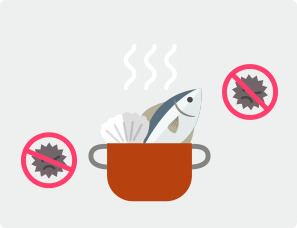

호우
많은 비가 오는 것을 뜻하며, 특히 단 시간에 많은 비가 올 때를 말합니다.
일반적으로 평균적인 강우보다 많은 비가 올 때를 집중호우라고 합니다.
호우 발생 전 이렇게 대비합니다.
- 호우 발생 전 이렇게 대비합니다.
- 주택의 하수구와 집주변의 배수구를 점검합시다.
- 침수나 산사태 위험지역 주민은 대피장소와 비상연락방법을 미리 알아둡시다.
- 하천에 주차된 자동차는 안전한 곳으로 이동합시다.
- 응급 약품, 손전등, 식수, 비상식량 등은 미리 준비해둡시다.
- 저지대·상습침수지역에 거주하고 계신 주민은 대피를 준비합시다.
- 침수 시 피난 가능한 장소를 동사무소나 시·군·구청에 연락하여 알아 둡시다.
- 대형공사장, 비탈면 등의 관리인은 안전 상태를 미리 확인합시다.
- 가로등이나 신호등 및 고압전선 근처에는 가까이 가지 맙시다.
- 집 안팎의 전기수리는 하지 맙시다.
- 공사장 근처에는 가까이 가지 맙시다.
- 운행 중인 자동차의 속도를 줄여주세요.
- 천둥·번개가 칠 경우 건물 안이나 낮은 지역으로 대피합시다.
- 물에 떠내려갈 수 있는 물건은 안전한 장소로 옮깁니다.
- 송전탑이 넘어졌을 때는 119나 시·군·구청 또는 한전에 즉시 연락합시다.
- 건물의 출입문이나 창문을 닫아둡시다.
- 노약자나 어린이는 집 밖으로 나가지 맙시다.
- 물에 잠긴 도로로 지나가지 맙시다.
- 대피할 때 수도와 가스 밸브를 잠그고, 전기차단기를 내려둡시다.
- 라디오, TV, 인터넷을 통해 기상예보 및 호우상황을 잘 알아 둡시다.
호우 발생 시 이렇게 행동합니다.
- 도시지역에서는
- 저지대·상습침수지역에 거주하고 계신 주민은 대피를 준비합시다.
- 대형공사장, 비탈면 등의 관리인은 안전 상태를 미리 확인합시다.
- 가로등이나 신호등 및 고압전선 근처에는 가까이 가지 맙시다.
- 집 안팎의 전기수리는 하지 맙시다.
- 공사장 근처에는 가까이 가지 맙시다.
- 도로에 있는 차량은 속도를 줄여서 운전합시다.
- 천둥·번개가 칠 경우 건물 안이나 낮은 지역으로 대피합시다.
- 물에 떠내려갈 위험이 있는 물건은 안전한 장소로 옮깁니다.
- 송전탑이 넘어졌을 때는 119나 시·군·구청 또는 한전에 즉시 연락합시다.
- 건물의 출입문이나 창문을 닫아둡시다.
- 노약자나 어린이는 집 밖으로 나가지 맙시다.
- 물에 잠긴 도로로 지나가지 맙시다.
- 대피할 때 수도와 가스 밸브를 잠그고, 전기차단기를 내려둡시다.
- 라디오, TV, 인터넷을 통해 기상예보 및 호우상황을 잘 알아 둡시다.
- 농작물을 보호하려는 조치를 취합시다.
- 집주변이나 농경지의 용·배수로를 미리 점검합시다.
- 산간계곡의 야영객은 미리 대피합시다.
- 이웃이나 가족 간의 연락방법과 비상시 대피방법을 확인합시다.
- 농기계나 가축 등을 안전한 장소로 옮깁시다.
- 비닐하우스, 인삼재배시설 등을 단단히 묶어 둡시다.
- 농촌지역에서는
- 저지대·상습침수지역에 거주하고 계신 주민은 대피를 준비합시다.
- 집주변의 산사태 위험이 있는지 살피고 대피 준비를 합시다.
- 고압전선 근처에는 가까이 가지 맙시다.
- 집 안팎의 전기수리는 하지 맙시다.
- 천둥·번개가 칠 경우 건물 안이나 낮은 지역으로 대피합시다.
- 물에 떠내려갈 수 있는 물건을 안전한 곳으로 옮깁시다.
- 모래주머니 등을 이용하여 하천의 물이 넘치지 않도록 하여 농경지의 침수를 예방합시다.
- 논둑을 미리 점검하시고 물꼬를 조정합시다.
- 다리는 안전한지 확인 후에 이용합시다.
- 산사태가 일어날 수 있는 비탈면에 접근하지 맙시다.
- 송전탑이 넘어졌을 때는 119나 시·군·구청 또는 한전에 즉시 연락합시다.
- 노약자나 어린이는 집 밖으로 나가지 맙시다.
- 라디오, TV, 인터넷을 통해 기상예보 및 호우상황을 잘 알아 둡시다.
- 해안지역에서는
- 저지대·상습침수지역에 거주하고 계신 주민은 대피를 준비합시다.
- 해안가의 위험한 비탈면에 접근하지 맙시다.
- 침수가 예상되는 건물의 지하공간에는 주차 하지 마시고, 지하에 거주하고 계신 주민은 대피합시다.
- 가로등과 고압전선 근처에 가까이 가지 맙시다.
- 집 안팎의 전기수리는 하지 맙시다.
- 공사장 근처에는 가까이 가지 맙시다.
- 해안도로로 운전하지 맙시다.
- 천둥·번개가 칠 경우 건물 안이나 낮은 지역으로 대피합시다.
- 육지의 물이 바다로 빠져나가는 곳 근처에는 가까이 가지 맙시다.
- 송전탑이 넘어졌을 때는 119나 시·군·구청 또는 한전에 연락합시다.
- 출입문, 창문 등을 잠급시다.
- 다리는 안전한지 확인한 후에 이용합시다.
- 노약자나 어린이는 집 밖으로 나가지 맙시다.
- 라디오, TV, 인터넷을 통해 기상예보 및 호우상황을 잘 알아 둡시다.
- 바닷가의 저지대 주민은 안전한 곳으로 대피합시다.
- 물에 떠내려갈 수 있는 어망·어구 등을 안전한 곳으로 옮깁시다.
- 해수욕장 이용은 하지 맙시다.
- 산악지역에서는
- 산사태 발생지역의 주민은 대피 준비를 합시다.
- 재배시설 등의 피해를 줄이려고 조치를 합시다.
- 기상정보와 강우상황을 주의 깊게 들읍시다.
호우 발생 후 이렇게 행동합니다.

- 집에 도착 후에는 들어가지 말고, 구조적 붕괴 가능성을 반드시 점검합시다.
- 파손된 상하수도나 축대·도로가 있을 때 시·군·구청이나 읍·면·동사무소에 연락합시다.
- 물에 잠긴 집안은 가스가 차 있을 수 있으니 환기한 후 들어가고, 가스·전기 차단기가 off에 있는지 확인하고,
기술자의 안전조사가 끝난 후 사용합시다.
- 침투된 오염물에 의해 침수된 음식이나 재료를 먹거나 요리재료로 사용하지 맙시다.
- 수돗물이나 저장식수도 오염 여부를 반드시 조사 후에 사용합시다.

 집중호우 대비 안전수칙(스팟)
집중호우 대비 안전수칙(스팟) 지진
지진
 태풍
태풍
 호우
호우
 강풍/풍랑
강풍/풍랑
 홍수
홍수
 대설
대설
 산불
산불
 폭염
폭염
 가뭄
가뭄